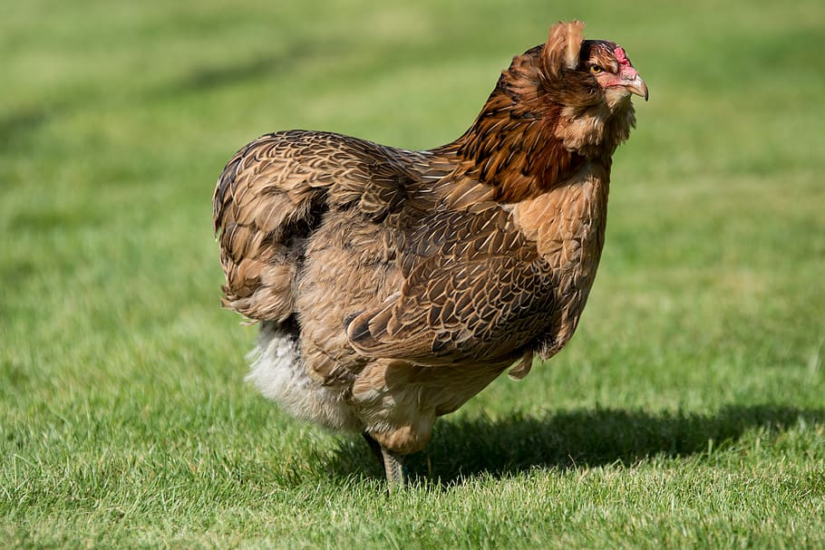

Araucana
Araucana kippen zijn rustige en lieve kippen. Het zijn uitstekende leggers. U kunt 5 tot 6 eieren per kip per week verwachten. Ze worden snel handtam en zijn zeer geschikt voor kinderen. Araucana kippen kunnen zowel in een ren als in de vrije uitloop gehouden worden. Ze behoren tot een van de vitaalste en meest geharde kippenrassen. Ook hebben ze geen bijzondere verzorging nodig. Het zijn daarom ideale kippen voor beginners, grotere kinderen en in een stadstuin. Araucana kippen leggen zeer opvallende kleuren eieren. De kleuren variëren in verschillende tinten blauw en groen. Omdat het ei van de Araucana kip een kleinere dooier heeft dan een gemiddeld ei, bevat het minder cholesterol. De Araucana kippen vallen niet alleen vanwege hun verschillende kleuren eieren op. Ook met hun uiterlijk zijn de Araucana kippen een opvallende verschijning in uw tuin.
